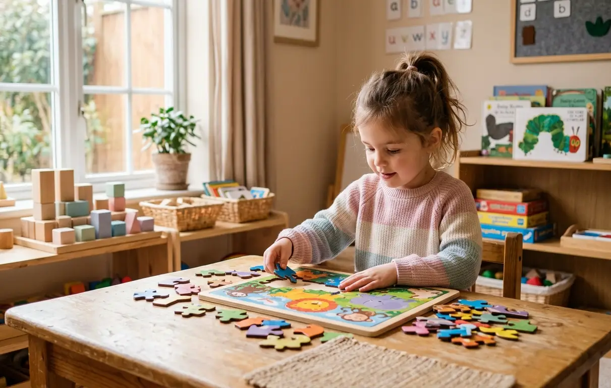

Avaliação Neuropsicopedagógica
Identificação das habilidades cognitivas e dificuldades de aprendizagem com base científica.
Avaliação e intervenção neuropsicopedagógica com ética, responsabilidade e base científica
Neuropsicopedagoga clínica com atuação desde 2019, formada em Pedagogia e Neuropsicopedagogia, com experiência na área educacional e clínica. Ofereço avaliação e intervenção neuropsicopedagógica com base científica, ética e responsabilidade técnica, auxiliando no desenvolvimento de habilidades essenciais para a aprendizagem. Atendimento individualizado, com escuta acolhedora e planejamento personalizado, sempre em parceria com a família e a escola.
Saiba maisIdentificação das habilidades cognitivas e dificuldades de aprendizagem com base científica.
Desenvolvimento de habilidades por meio de estratégias personalizadas.
Análise cuidadosa para compreender as causas das dificuldades.
Apoio às famílias para auxiliar no desenvolvimento da criança.
Direcionamento para a escola com foco no processo de aprendizagem.

"Percebemos uma grande evolução na aprendizagem e na confiança do nosso filho."
Responsável por paciente
Ver mais depoimentos"O atendimento foi essencial para entender as dificuldades e encontrar o melhor caminho."
Mãe de paciente
Agende uma consulta ou tire suas dúvidas. Estou pronta para te ajudar.
 Falar no WhatsApp
Falar no WhatsApp